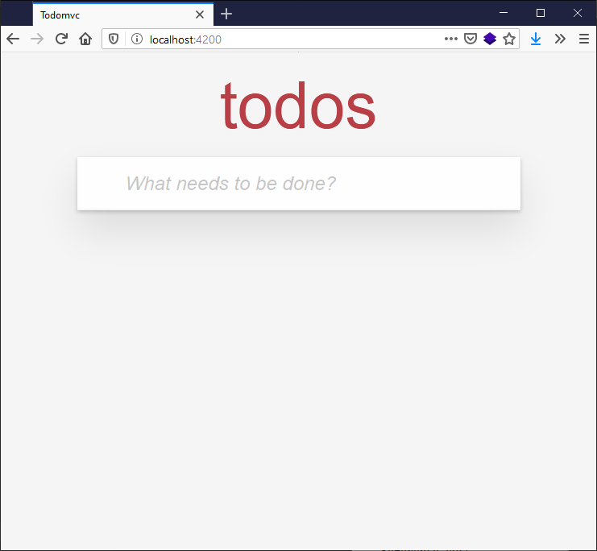
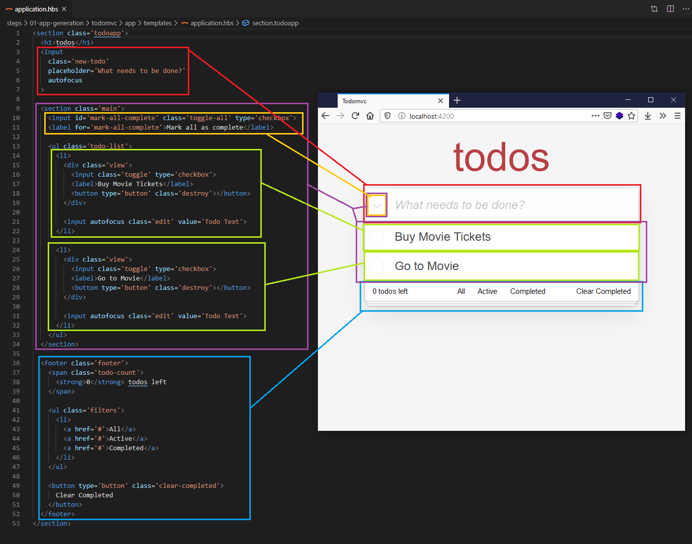
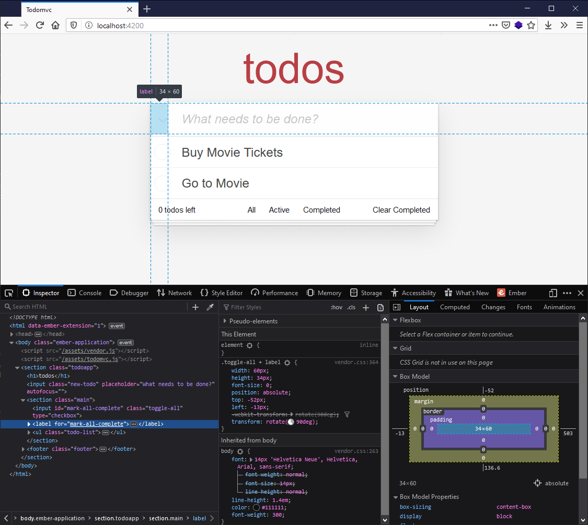
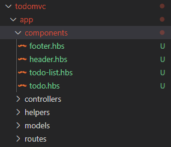
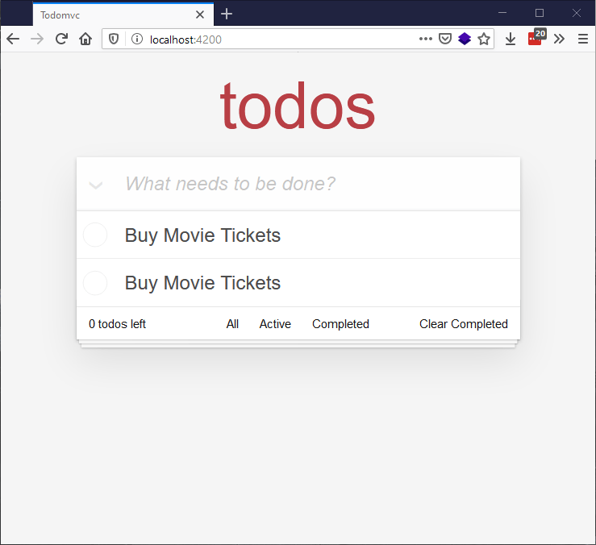

In this article we'll get right on with planning out the structure of our TodoMVC Ember app, adding in the HTML for it, and then breaking that HTML structure into components.
| Prerequisites: |
At minimum, it is recommended that you are familiar with the core HTML, CSS, and JavaScript languages, and have knowledge of the terminal/command line. A deeper understanding of modern JavaScript features (such as classes, modules, etc), will be extremely beneficial, as Ember makes heavy use of them. |
|---|---|
| Objective: | To learn how to structure an Ember app, and then break that structure into components. |
In the last article we set up a new Ember project, then added and configured our CSS styles. At this point we add some HTML, planning out the structure and semantics of our TodoMVC app.
The landing page HTML of our application is defined in app/templates/application.hbs. This already exists, and its contents currently look like so:
\{{!-- The following component displays Ember's default welcome message. --}}
<WelcomePage />
\{{!-- Feel free to remove this! --}}
\{{outlet}}
<WelcomePage /> is a component provided by an Ember addon that renders the default welcome page we saw in the previous article, when we first navigated to our server at localhost:4200.
However, we don't want this. Instead, we want it to contain the TodoMVC app structure. To start with, delete the contents of application.hbs and replace them with the following:
<section class="todoapp">
<h1>todos</h1>
<input
class="new-todo"
aria-label="What needs to be done?"
placeholder="What needs to be done?"
autofocus
>
</section>
Note: aria-label provides a label for assistive technology to make use of — for example, for a screenreader to read out. This is useful in such cases where we have an <input> being used with no corresponding HTML text that could be turned into a label.
When you save application.hbs, the development server you started earlier will automatically rebuild the app and refresh the browser. The rendered output should now look like this:

It doesn't take too much effort to get our HTML looking like a fully-featured to-do list app. Update the application.hbs file again so its content looks like this:
<section class="todoapp">
<h1>todos</h1>
<input
class="new-todo"
aria-label="What needs to be done?"
placeholder="What needs to be done?"
autofocus
>
<section class="main">
<input id="mark-all-complete" class="toggle-all" type="checkbox">
<label for="mark-all-complete">Mark all as complete</label>
<ul class="todo-list">
<li>
<div class="view">
<input
aria-label="Toggle the completion of this todo"
class="toggle"
type="checkbox"
>
<label>Buy Movie Tickets</label>
<button
type="button"
class="destroy"
title="Remove this todo"
></button>
</div>
<input autofocus class="edit" value="Todo Text">
</li>
<li>
<div class="view">
<input
aria-label="Toggle the completion of this todo"
class="toggle"
type="checkbox"
>
<label>Go to Movie</label>
<button
type="button"
class="destroy"
title="Remove this todo"
></button>
</div>
<input autofocus class="edit" value="Todo Text">
</li>
</ul>
</section>
<footer class="footer">
<span class="todo-count">
<strong>0</strong> todos left
</span>
<ul class="filters">
<li>
<a href="#">All</a>
<a href="#">Active</a>
<a href="#">Completed</a>
</li>
</ul>
<button type="button" class="clear-completed">
Clear Completed
</button>
</footer>
</section>
The rendered output should now be as follows:
This looks pretty complete, but remember that this is only a static prototype. Now we need to break up our HTML code into dynamic components; later we'll turn it into a fully interactive app.
Looking at the code next to the rendered todo app, there are a number of ways we could decide how to break up the UI, but let's plan on splitting the HTML out into the following components:

The component groupings are as follows:
mark-all-complete button (purple in the image)
mark-all-complete button, explicitly highlighted for reasons given below (yellow in the image)Something odd to note is that the mark-all-complete checkbox (marked in yellow), while in the "main" section, is rendered next to the "new-todo" input. This is because the default CSS absolutely positions the checkbox + label with negative top and left values to move it next to the input, rather than it being inside the "main" section.

So to represent our app, we want to create 4 components:
To create a component, we use the ember generate component command, followed by the name of the component. Let’s create the header component first. To do so:
Stop the server running by going to the terminal and pressing Ctrl + C.
Enter the following command into your terminal:
ember generate component header
These will generate some new files, as shown in the resulting terminal output:
installing component create app/components/header.hbs skip app/components/header.js tip to add a class, run `ember generate component-class header` installing component-test create tests/integration/components/header-test.js
header.hbs is the template file where we’ll include the HTML structure for just that component. Later on we'll add the required dynamic functionality such as data bindings, responding to user interaction, etc.
Note: The header.js file (shown as skipped) is for connection to a backing Glimmer Component Class, which we don't need for now, as they are for adding interactivity and state manipulation. By default, generate component generates template-only components, because in large applications, template-only components end up being the majority of the components.
header-test.js is for writing automated tests to ensure that our app continues to work over time as we upgrade, add features, refactor, etc. Testing is outside the scope of this tutorial, although generally testing should be implemented as you develop, rather than after, otherwise it tends to be forgotten about. If you're curious about testing, or why you would want to have automated tests, check out the official Ember tutorial on testing.
Before we start adding any component code, let’s create the scaffolding for the other components. Enter the following lines into your terminal, one by one:
ember generate component todo-list ember generate component todo ember generate component footer
You’ll now see the following inside your todomvc/app/components directory:

Now that we have all of our component structure files, we can cut and paste the HTML for each component out of the application.hbs file and into each of those components, and then re-write the application.hbs to reflect our new abstractions.
The header.hbs file should be updated to contain the following:
<input class="new-todo" aria-label="What needs to be done?" placeholder="What needs to be done?" autofocus >
todo-list.hbs should be updated to contain this chunk of code:
<section class="main">
<input id="mark-all-complete" class="toggle-all" type="checkbox">
<label for="mark-all-complete">Mark all as complete</label>
<ul class="todo-list">
<Todo />
<Todo />
</ul>
</section>
Note: The only non-HTML in this new todo-list.hbs is the <Todo /> component invocation. In Ember, a component invocation is similar to declaring an HTML element, but the first letter starts with a capital letter, and the names are written in upper camel case, as you'll see with <TodoList /> later on. The contents of the todo.hbs file below will replace <Todo /> in the rendered page as our application loads.
Add the following into the todo.hbs file:
<li>
<div class="view">
<input
aria-label="Toggle the completion of this todo"
class="toggle"
type="checkbox"
>
<label>Buy Movie Tickets</label>
<button
type="button"
class="destroy"
title="Remove this todo"
></button>
</div>
<input autofocus class="edit" value="Todo Text">
</li>
footer.hbs should be updated to contain the following:
<footer class="footer">
<span class="todo-count">
<strong>0</strong> todos left
</span>
<ul class="filters">
<li>
<a href="#">All</a>
<a href="#">Active</a>
<a href="#">Completed</a>
</li>
</ul>
<button type="button" class="clear-completed">
Clear Completed
</button>
</footer>
Finally, the contents of application.hbs should be updated so that they call the appropriate components, like so:
<section class="todoapp"> <h1>todos</h1> <Header /> <TodoList /> <Footer /> </section>
With these changes made, run npm start in your terminal again, then head over to http://localhost:4200 to ensure that the todo app still looks as it did before the refactor.

Notice how the todo items both say "Buy Movie Tickets" — this is because the same component is being invoked twice, and the todo text is hardcoded into it. We'll look at showing different todo items in the next article!
Great! Everything looks as it should. We have successfully refactored our HTML into components! In the next article we'll start looking into adding interactivity to our Ember application.
{{PreviousMenuNext("Learn/Tools_and_testing/Client-side_JavaScript_frameworks/Ember_getting_started","Learn/Tools_and_testing/Client-side_JavaScript_frameworks/Ember_interactivity_events_state", "Learn/Tools_and_testing/Client-side_JavaScript_frameworks")}}